sector74 supernovae (18 total)
Each figure has three panels. The top panel shows the transient light curve, the middle panel shows the local background (estimated in an annulus), and the bottom panel shows a "background-model corrected" light curve. Details about the background model are in the README.
The vertical red line marks the time of discovery reported to TNS. Other useful metadata from TNS is in the figure title.
Note that the top and bottom panel are in magnitudes, while the middle panel is in differential flux units. The magnitudes are calibrated to the flux in the reference image used for image subtraction. Thus, flux from the host galaxy is included in these magnitudes.
3-sigma upper limits are plotted as triangles with no errorbars. A typical limiting magnitude is 19.6 in 30 minutes or 18.4 in 200 seconds (for low backgrounds).
The links allow you to download the light curve data as a text file.
More details in the README.
2024en
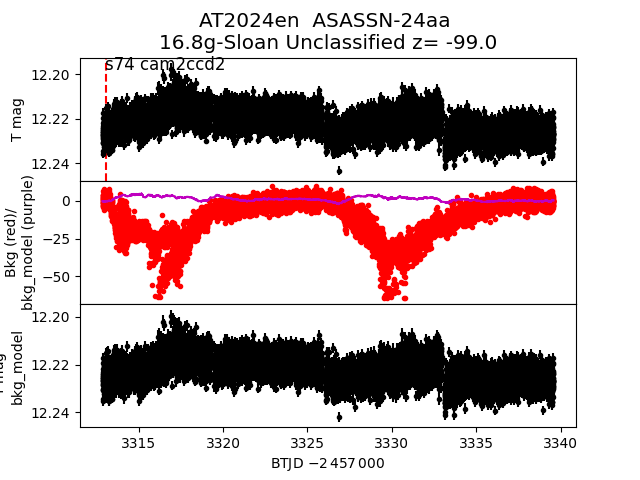
2024cej
 2024bfe
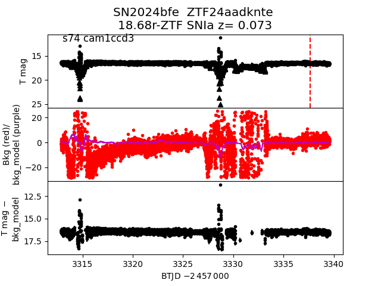
2024ea
2024bfe
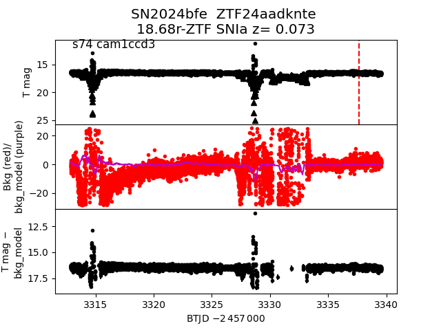
2024ea
 2024bkp
2024bkp
 2024ciu
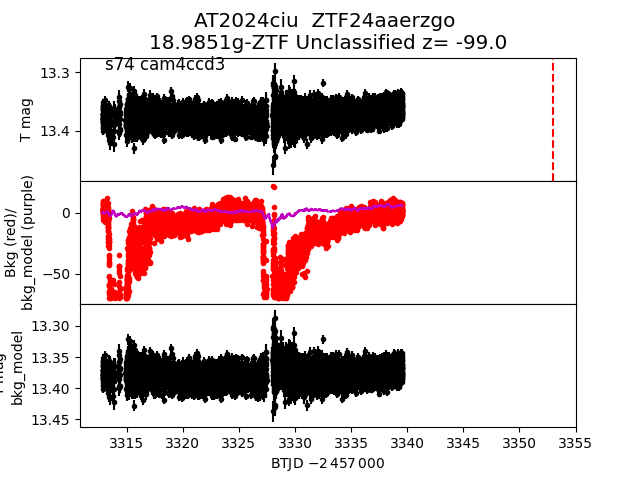
2024ox
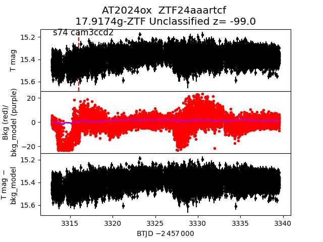
2024csd
2024ciu
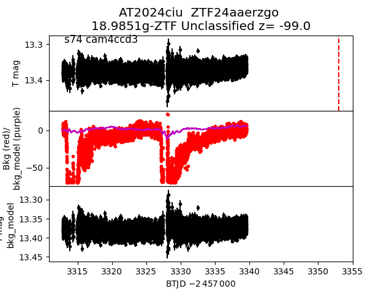
2024ox
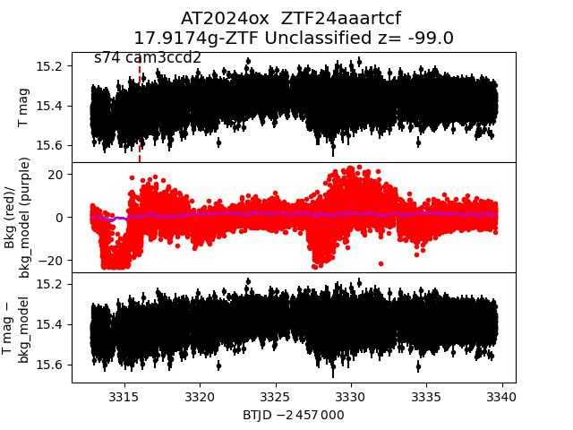
2024csd
 2024vs
2024vs
 2024bhp
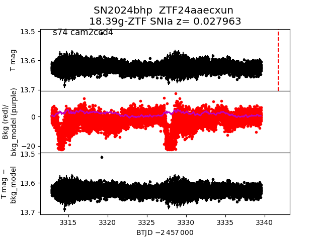
2024bwy
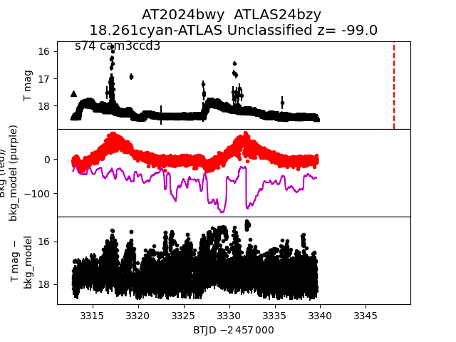
2024crf
2024bhp
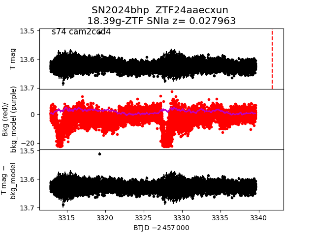
2024bwy
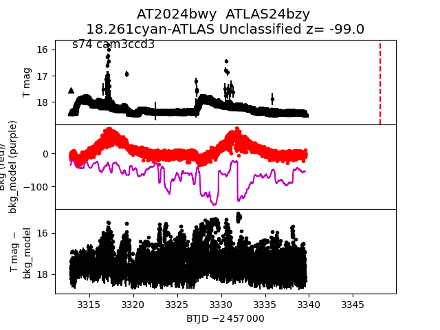
2024crf
 2024cu
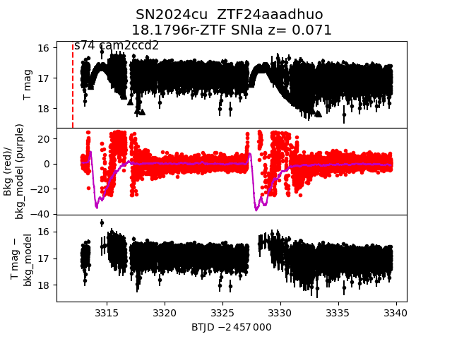
2024oe
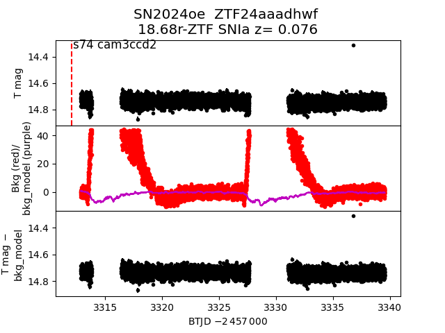
2024bce
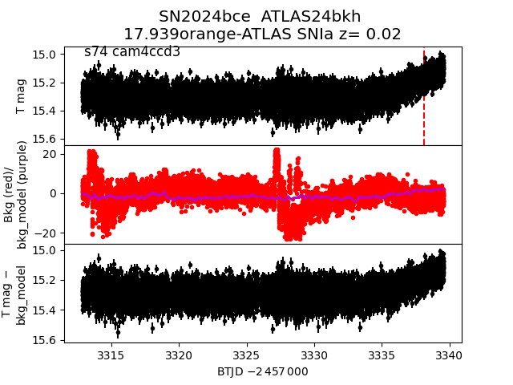
2024ws
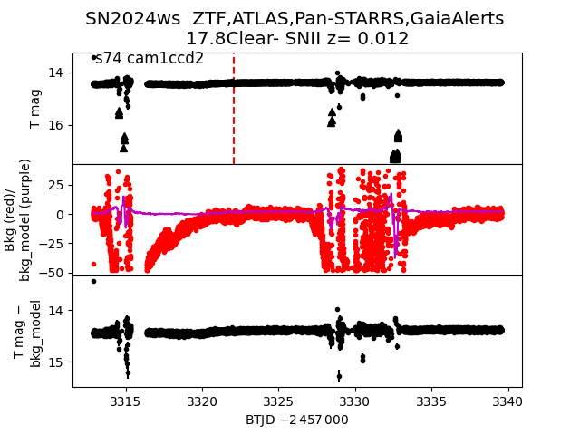
2024nj
2024cu
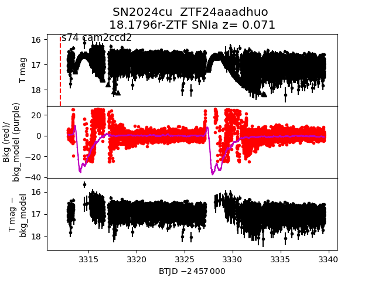
2024oe
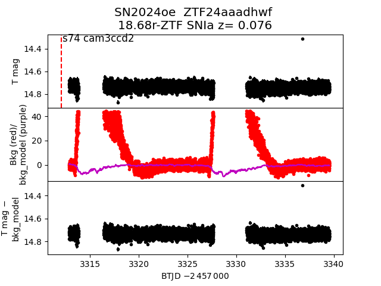
2024bce
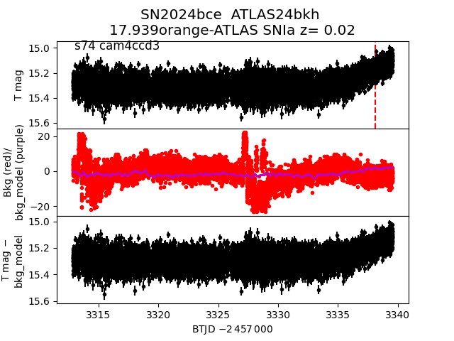
2024ws
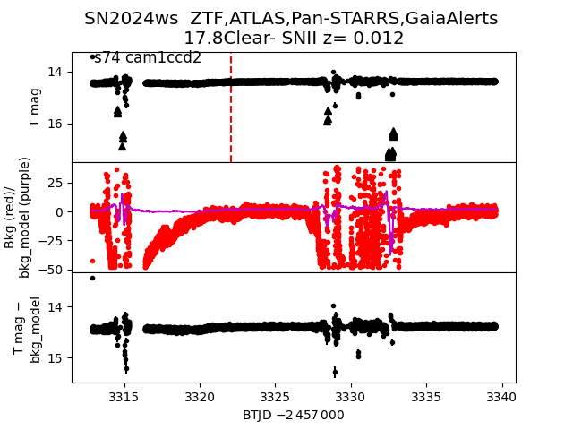
2024nj
 2024biv
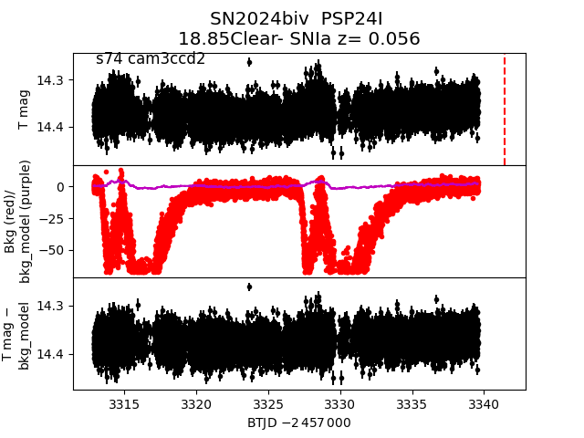
2024biv
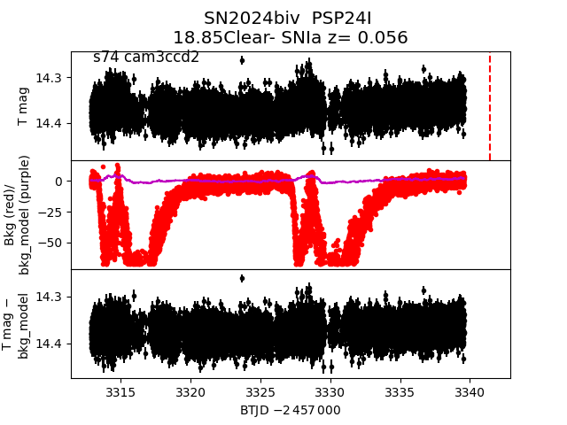